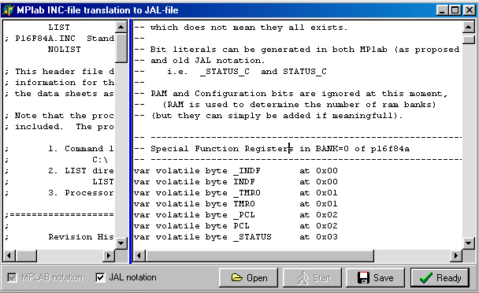
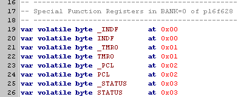
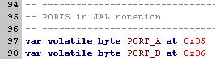
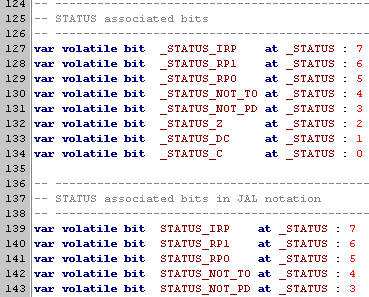
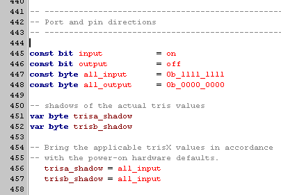
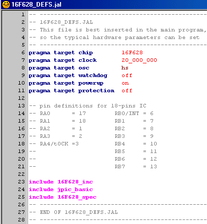

september 2004
JALcc, INC to JAL translation
This module translates the microchip inc-files to JAL-files (JPIC equivalent).
Although this program is not meant as a stand-alone program, it's released as a stand-alone program, due to the current discussion in the JALlist. Eur van Andel is momentary busy writing universal JPIC14 files, so watch his messages too.
The stand-alone program can be found here inc2jal.zip (800k)
The program is very large, because it's in fact a complete JALcc, but only the inc-translation window is shown.
For some common PIC types, you can find some examples of translated files here:
12f675_sm_inc.jal
16f628_inc.jal
16f877_inc.jal
27-september-2004 (JALcc V028)
- "port_A" removed
- portA and pin_A0 put procedures optimized
- _trisA_Flush procedures optimized
- _trisE_Flush bug fixed
- all higher bank registers optimized (not through indf.jal anymore)
- all settings blocked (so only 1 output format is available)
- individual bits of registers in bank0, are available in 2 notations
- Revision History of inc file is included as comment
|
New
-- port_A removed
procedure porta'put( byte in x at _port_a_buffer ) is
asm movwf porta
end procedure
procedure pin_a0'put( bit in x at _port_a_buffer : 0 ) is
asm movf _port_a_buffer,w
asm movwf porta
end procedure |
Old
procedure port_a'put( byte in x at _port_a_buffer ) is
_port_a_flush
end procedure
procedure porta'put( byte in x at _port_a_buffer ) is
_port_a_flush
end procedure
procedure pin_a0'put( bit in x at _port_a_buffer : 0 ) is
_port_a_flush
end procedure |
|
New
procedure _trisa_flush is
asm movfw trisa_shadow
asm bsf RP0
asm movwf _TRISA
asm bcf RP0
end procedure |
Old
procedure _trisa_flush is
asm movfw trisa_shadow
bank_1
asm movwf _TRISA
bank_0
end procedure |
|
New
procedure _trisE_flush is
assembler
movfw trisE_shadow
andlw 0x0F
movwf trisE_shadow
bsf RP0
movfw _TRISE
andlw 0xF0
bcf RP0
iorwf trisE_shadow,f
bcf RP0
movfw trisE_shadow
bsf RP0
movwf _TRISE
bcf RP0
end assembler
end procedure |
Old
procedure _trise_flush is
asm movfw trise_shadow
bank_1
asm movwf 0x9
bank_0
end procedure |
|
New
procedure TRISA'put( byte in x ) is
asm bsf RP0
asm movwf _TRISA
asm bcf RP0
end procedure
function TRISA'get return byte is
var byte x
asm bsf RP0
asm movwf _TRISA
asm bcf RP0
asm movwf x
return x
end function |
Old
procedure TRISA'put( byte in x ) is
_file_put( high_TRISA, low_TRISA, x )
end procedure
function TRISA'get return byte is
var byte x
_file_get( high_TRISA, low_TRISA, x )
return x
end function |
Individual Bits (bank0), have 2 notations
-- ------------------------------------------------------------------
-- STATUS associated bits
-- ------------------------------------------------------------------
var volatile bit IRP at STATUS : 7
var volatile bit STATUS_IRP at STATUS : 7
Old doc, to be reviewed
|
INC2JAL.exe
- press OPEN
- select the INC file to be translated
- checking JAL NOTATION will generate also the old JAL notations (i.e. "port_a")
- press START
- now the right window contains the translation, you can edit this window before saving
- press SAVE, to store the translation
- press READY to stop the program
|
 |
|
Here the registers are translated both in MPLAB and old JAL notation.
MPLAB notation is according to the proposal of Wouter van Ooijen (13-11-2001), the official MPLAB name (in uppercase) preceeded by a underscore.
Old JAL notation is just the register name in uppercase. |
 |
|
Ports in old JAL notation, which is special case. |
 |
|
Bits, both in MPLAB notation and old JAL notation |
 |
|
Another exception,
TRISA, etc which are official MPLAB definitions, are used in old JAL notation as a shadow variable.
So here I changed the name in TRISA_SHADOW |
 |
|
Use of INC-files
Still wrestling with the optimal solution.
I'm now using/testing the following construction:
16F628_defs.jalFile which is not included but inserted. In this way you have control over all hardware parameters. It also includes all necessary files.
(I'm searching for a "smart" insert, which tracks my changes, so when using another device, I only have to change the defs-file).16F628_inc.jalThe automatic translated INC file (with old JAL notations)JPIC_basic.jalAll that was in JPIC.JAL, except the things that now are in 16F628_inc.jal.16F628_spec.jalAll special features of the specific device,... |
 |